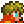
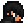

Fan-made · Naruto
Shinobi: Naruto Mod
A full ninja progression layer on top of Terraria: a chakra resource, clan bloodlines, 28 jutsu, seven dojutsu with Mangekyō paths, Kurama the Nine-Tails as a two-form boss, and Naruto and Sasuke as town NPCs.
Not yet compiled. This mod was written without a .NET SDK or tModLoader, so it hasn't been built or run yet and will likely need a build-and-fix pass. All sprites are placeholders.
Chakra
A third resource alongside life and mana, shown as a bar in the bottom-left of the HUD.
- Base pool of 100, plus clan bonuses, accessories and up to 10 Chakra Crystals (+20 each).
- Regenerates at 2 per second while moving and 5 per second while standing still.
- Every jutsu spends it. Running dry shuts off an active dojutsu.
| Key | Action |
|---|
V | Toggle the equipped dojutsu on or off |
C | Chakra Surge: burn a quarter of your life for triple that in chakra (30 s cooldown) |
X | Body Flicker: a 15-chakra dash toward the cursor with brief invulnerability |
Z G H | Dojutsu abilities 1, 2 and 3 |
All keys can be rebound under Settings → Controls → Mod Controls.
Clans
Pick one clan per character by using a Clan Scroll. Scrolls are used up, so switching always costs something.
| Clan | Identity |
|---|
| Civilian | Balanced default; small bonus to everything |
| Uchiha | Fire ninjutsu and crit; glass cannon (−20 max life) |
| Hyuga | Melee damage and attack speed; sees creatures and danger |
| Uzumaki | +80 chakra, +40 life, strong regen; jutsu cost 10% more |
| Senju | +60 life, +6 defence, life regen, summon damage |
| Nara | Jutsu cost 25% less |
| Aburame | +18% summon damage and +2 minion slots |
| Inuzuka | Melee crit and big move speed |
| Akimichi | +80 life, +10 defence, huge knockback; slow |
| Kaguya | +14 defence, heavy thorns, immune to knockback |
| Sarutobi | +45 chakra and a bit of everything |
| Yamanaka | Magic damage, cheaper mana, immune to Confused |
Jutsu
28 jutsu items in five categories. Each costs chakra and may need a clan, an active dojutsu, or both.
- Ninjutsu: Great Fireball, Phoenix Flower, Water Dragon, Water Bullet, Mud Wall, Great Breakthrough, Chidori, Purple Lightning, Rasengan, Rasenshuriken, Amaterasu, Shinra Tensei, Chibaku Tensei, Tailed Beast Bomb, Susanoo, Sage Mode
- Taijutsu: Leaf Whirlwind, Dynamic Entry, Primary Lotus, Gentle Fist, Eight Trigrams Sixty-Four Palms
- Genjutsu: Tree Binding Death, Sharingan Paralysis, Tsukuyomi, Infinite Tsukuyomi (these freeze ordinary enemies and slow bosses)
- Kinjutsu: Shadow Clone Jutsu, Eight Gates Released Formation
- Summoning: Toad Summoning
Dojutsu
Seven eye accessories. Toggle one on with V for big bonuses at a continuous chakra drain; each has its own abilities on Z, G and H.
Byakugan → Sharingan → Mangekyō → Eternal Mangekyō → Rinnegan / Tenseigan → Rinne Sharingan
Sharingan-line eyes need the Uchiha clan; Byakugan and Tenseigan need Hyuga. Rinnegan and Rinne Sharingan are open to anyone who can craft them.
Mangekyō paths
The first time you equip a Mangekyō Sharingan, you choose whose eyes you opened. The choice is permanent and sets your three ability keys and passive:
| Wielder | Z | G | H | Passive |
|---|
| Itachi | Tsukuyomi | Amaterasu | Crow Clone | +15% magic, +10% crit, −6 defence |
| Sasuke | Amaterasu | Blaze Release: Kagutsuchi | Susanoo | +20% magic, fire and lava immunity |
| Madara | Perfect Susanoo | Susanoo: Yasaka Magatama | Susanoo: Ribcage Guard | +25% melee, +12 defence, +10% DR, no knockback |
| Shisui | Kotoamatsukami | Kotoamatsukami: Suggestion | Body Flicker | Jutsu cost −40%, big chakra regen, +25% speed |
| Kakashi | Kamui | Kamui: Banish | Kamui Shuriken | Free Body Flicker, +40% speed, +15% melee |
| Obito | Kamui: Intangibility | Kamui: Phase | Kamui: Absorb | Intangible every 4 s, +15% DR, +6 regen |
Kurama sometimes drops a Preserved Mangekyō Sharingan Set (roughly one fight in three). It gives one wielder's eyes at random; using a different wielder's eyes fuses the two into an Eternal Mangekyō that has both wielders' techniques.
Kurama, the Nine-Tails
Kurama Any time
Summon: a craftable Kurama Sealing Tag with no prerequisites, so you can fight him as soon as you have the materials, and as often as you like.
Four attacks: a chakra orb volley, a charge, the Tailed Beast Bomb and a claw rush. At half health he transforms into Kurama, Nine-Tails Chakra Mode: gold, a little larger, at full enraged pace and with 20% more defence. He draws his own health bar showing which half of the fight you're in.
Drops: Tailed Beast Chakra and Six Paths Chakra (the materials for most Hardmode recipes), sometimes a Preserved Mangekyō Sharingan Set
Town NPCs
| NPC | Arrives | Shop | Second shop |
|---|
 Naruto | Immediately | Scrolls, kunai, shuriken, tags, headband, soldier pills, chakra crystals, starter jutsu | All 12 clan scrolls |
 Sasuke | After the Eater of Worlds or Brain of Cthulhu | The jutsu catalogue | Sharingan, Byakugan and sealing tags |
Naruto loves the forest and dislikes the snow; Sasuke is the reverse.
Suggested progression
Pick a bloodline
Get a Blank Scroll and a Clan Scroll from Naruto's stock.
Learn the basics
Buy starter jutsu and thrown weapons from Naruto.
Grow your chakra
Craft Chakra Crystals (Fallen Stars and a Sapphire).
Unlock Sasuke
Beat the Eye of Cthulhu and an evil boss; Sasuke moves in with the jutsu catalogue.
Fight the Nine-Tails
Craft a Kurama Sealing Tag whenever you like.
Endgame
Tailed Beast Chakra unlocks the Rasengan line, Susanoo, Sage Mode and the Mangekyō; Six Paths Chakra unlocks the Rinnegan, Tenseigan and the Rinne Sharingan with Infinite Tsukuyomi.
Install
- Copy or link the
ninjafight folder from the repository into your ModSources folder. Keep the name ninjafight: it must match the mod's namespace.
- In tModLoader open Workshop → Develop Mods and click Build + Reload.
Source: github.com/speedyteam101/terraria-mod